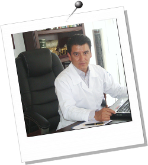

Currículum
Dr. Miguel Ángel Cortés Mora
Médico Especialista en Traumatología y Ortopedia.
Sub-especialista en Artroscopia y Reconstrucción de Cadera; Burgos, España.
Instrucción en Prótesis de Cadera última Generación; Paris, Francia.
Formación en Traumatología Deportiva; Barcelona, España.
Actualización en Artroscopía, Clinic Orthopaedic Trauma; California, U.S.A.
Formación en Cirugía de Columna; Hospital Central Militar, México, D.F.
Certificado ante el Consejo Mexicano de Ortopedia y Traumatología.
Miembro Titular del Colegio Mexicano de Ortopedia y Traumatología.
Miembro Titular de la Sociedad Latinoamericana de Ortopedia y Traumatología Federación.
Miembro de la Asociación Española de Artroscopia.
Miembro de Asociación Nacional Española de Traumatología del Deporte.
Profesor Titular Universitario de Posgrado en la Especialidad de Ortopedia y Traumatología.
Especialista de Referencia Institucional (ISSSTE) para cirugía articular.
Más de 1200 cirugías realizadas avalan el trabajo del Dr. Cortés.